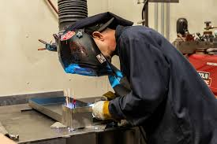

SolidArc: Precision in Fabrication Welding
At SolidArc, the focus on precision and quality in machine welding is unparalleled. Their adeptness in handling complex welding projects ensures that every piece of equipment fabricated or repaired adds substantial value in terms of structural integrity and operational stability. Known for their meticulous attention to detail, SolidArc employs state-of-the-art technology and innovative techniques to deliver results that consistently exceed industry standards.
The robust services offered by SolidArc are crucial for industries reliant on heavy machinery. In sectors like mining and manufacturing, equipment must withstand extreme conditions and continuous use. SolidArc’s expertise in equipment fabrication welding ensures that machinery not only meets these rigorous demands but also achieves prolonged operational life. This level of reliability is essential for minimizing downtime and maximizing productivity, making SolidArc a trusted partner in heavy industry operations.
A Partner in Industrial Growth
Industries across the globe rely on SolidArc for their critical welding needs. With a reputation built on reliability, precision, and innovation, SolidArc continues to be a key contributor to the growth and success of heavy industries. By providing expert welding services that enhance the structural integrity and functionality of heavy machinery, SolidArc helps businesses achieve their operational goals and maintain competitive advantages in their respective markets. In conclusion, when it comes to reliable and precise equipment fabrication welding, SolidArc is the industry benchmark. Their expertise in enhancing machine performance through superior welding services makes them an invaluable partner to heavy industries, ensuring that each project contributes to greater productivity and stability in some of the most challenging environments.